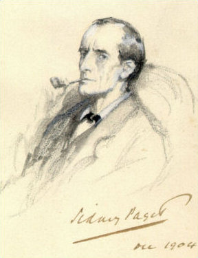

Sherlock Holmes (/ˈʃɜːrlɒk ˈhoʊmz/ or /-ˈhoʊlmz/) is a fictional private detective created by British author Sir Arthur Conan Doyle. Referring to himself as a "consulting detective" in the stories, Holmes is known for his proficiency with observation, deduction, forensic science, and logical reasoning that borders on the fantastic, which he employs when investigating cases for a wide variety of clients, including Scotland Yard.
First appearing in print in 1887's A Study in Scarlet, the character's popularity became widespread with the first series of short stories in The Strand Magazine, beginning with "A Scandal in Bohemia" in 1891; additional tales appeared from then until 1927, eventually totalling four novels and 56 short stories. All but one are set in the Victorian or Edwardian eras, between about 1880 and 1914. Most are narrated by the character of Holmes's friend and biographer Dr. John H. Watson, who usually accompanies Holmes during his investigations and often shares quarters with him at the address of 221B Baker Street, London, where many of the stories begin.